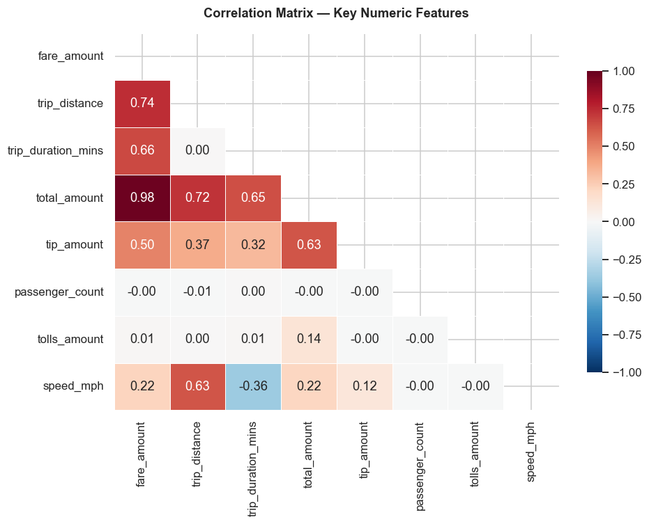

Case Study · Educational Capstone
Automatidata × NYC TLC — Taxi Fare Prediction
An exploratory analysis of 22,699 New York City yellow-taxi trips (January 2017) to identify what drives taxi fares — distance, duration, and payment behavior.
This is a Google Advanced Data Analytics Certificate capstone and a consulting-project scenario. It is an educational exercise, not a real commercial client engagement.
Context / The Problem
The New York City Taxi & Limousine Commission (TLC) oversees a fleet of licensed taxi and for-hire vehicles that make roughly a million trips a day. Despite that scale, riders have little reliable way to estimate a fare before entering a cab — a source of friction, disputes, and a trust gap with the industry.
In this scenario, the data team's task is to understand the strongest predictors of fare amount so a future pre-ride fare estimator could be built. This phase focuses on data quality, distributions, and identifying which variables best explain fare.
Approach — PACE Framework
The Data
22,699 yellow-taxi trips from January 2017 across 19 columns, with no missing values. Duration, speed, pickup timing (hour / day / month), vendor, and payment label were engineered to enrich the analysis.
Key Findings
Outlier analysis flagged a small share of extreme fares and distances (IQR method), informing preprocessing before modeling.
Visual Evidence


Business Interpretation
Trip distance shows the strongest observed relationship with fare among the tested variables, with duration also meaningfully related — important for slow, congested rides where distance alone understates the fare.
Payment method adds useful behavioral context: the majority (66.7%) of rides are paid by card, which is the channel that reliably captures tip amounts relevant to total revenue. Outlier handling matters for any downstream fare model.
Tools
Source
"The strongest evidence is the one you can trace back to the source." — Path of Kuni